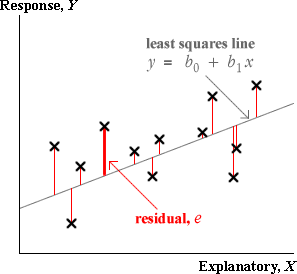
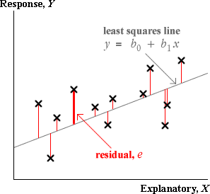
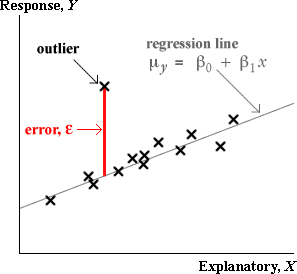
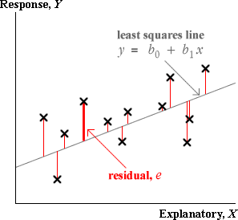
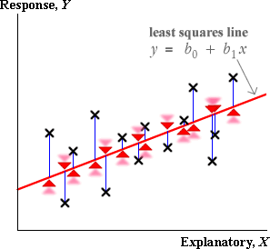

Outliers and errors
An outlier is a measurement that does not fit in with the pattern exhibited by the rest of the data. By definition, an outlier does not satisfy the normal linear model that fits the rest of the data, so it should be omitted from the analysis.
In a regression situation, an outlier corresponds to a large error, ε.
In a scatterplot, the point is unusually far above or below the regression line.

Standardised residuals
Unfortunately, in a real data set, the errors are unknown, so we must use the residuals from the least squares line as estimates of the errors. The residuals can be used in a similar way to give information about whether there is an outlier.

Hopefully the large error will correspond to an unusually large residual that will stand out from the distribution of the other residuals.
To help assess the residuals, it is common to standardise them — dividing by an estimate of the standard deviation of each. (The details of the standardisation are not important, but it is worth noting that the errors, ε, all have standard deviation σ. The residuals have a standard deviation that is a bit smaller than this.)
| standardised residual = | e |
| se |
The standardised residuals are each approximately normally distributed with mean 0 and standard deviation 1 if the normal linear model fits. From the properties of the standard normal distribution, only about 5% of the standardised residuals will be outside the range ±2, and hardly any outside the range ±3. Most statistical software will evaluate standardised residuals for you when you fit a line by least squares and automatically report any outside these ranges.
Standadised residual greater than 3 or less than -3 are often taken to indicate possible outliers.
It is worth remembering however that there is still a probability 0.003 that a value from the standard normal distribution will be outside ±3. In a data set of 1,000 values, it would therefore be expected that 3 values would be labelled as 'outliers' by this rule.
In large data sets, do not assume that standardised residuals outside ±3 must be outliers — values a little outside can also occur by chance.
Standardised residuals when there are no outliers
The scatterplot below shows a data set that is sampled from a normal linear model. A plot of the standardised residuals is shown on the right.
Click Another data set a few times and observe that standardised residuals are occasionally outside ±2. When the sample size is increased, there are often some standardised residuals outside this range.
It is unusual for standardised residuals to be outside ±3 when the sample size is small, but even this is not uncommon when the sample size is large.
Standardised residuals would need to be outside ±3.5 or ±4 for us to be really confident that they are outliers.
Problems with residuals as indicators of outliers
All data points pull the least squares line towards themselves — the line is positioned to minimise the sum of squares of the residuals
minimise 
Imagine the blue residuals below as rubber bands, all pulling the least squares line. The further a cross from the line, the stronger its pull on the line.

Large residuals pull very strongly on the line since they are squared in the least squares criterion (the rubber band is extremely tight). As a result,
Outliers will strongly pull the least squares line towards themselves, making their residuals smaller than you might otherwise expect.
Leverage
This effect is strongest when the x-value of a point is very large or small. Using the analogy of rubber bands pulling the least squares line, points with extreme x-values have more leverage on the position of the least squares line.
If an outlier corresponds to a high-leverage point, its residual may therefore still be small.
Illustration
The scatterplot below shows a data set and the corresponding residuals.
The cross on the far right can be dragged with the mouse. Initially, the diagram shows what we would ideally have hoped to see in the residuals — the other points are close to a straight line, so if the final cross is dragged away from this line, we would have hoped that it would result in a large residual.
This is not what actually happens. Choose What you actually get... from the pop-up menu at the top and drag the point again. The least squares line is pulled towards the point, so when it is dragged away from the line followed by the other points, its residual is smaller than might be expected and the residuals for the other points are larger.
This is especially evident when the point being dragged has an x-value of around 4 — i.e. when it is a high leverage point. Drag it down to a y-value of about 40 and observe that its residual is no more extreme than those of the other points.
Do not rely on an extreme residual to tell you whether a high-leverage point is an outlier.